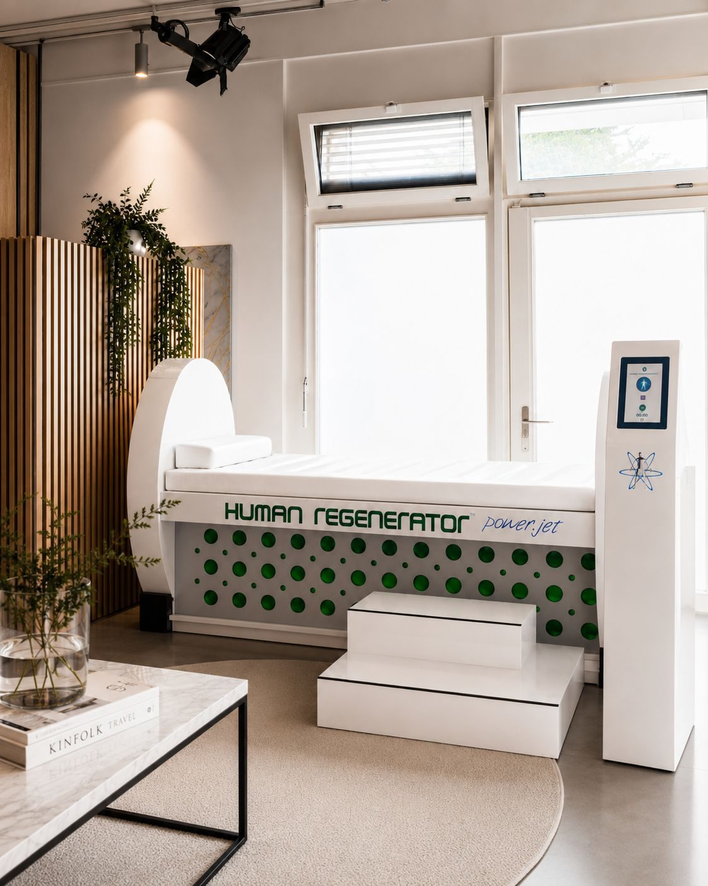
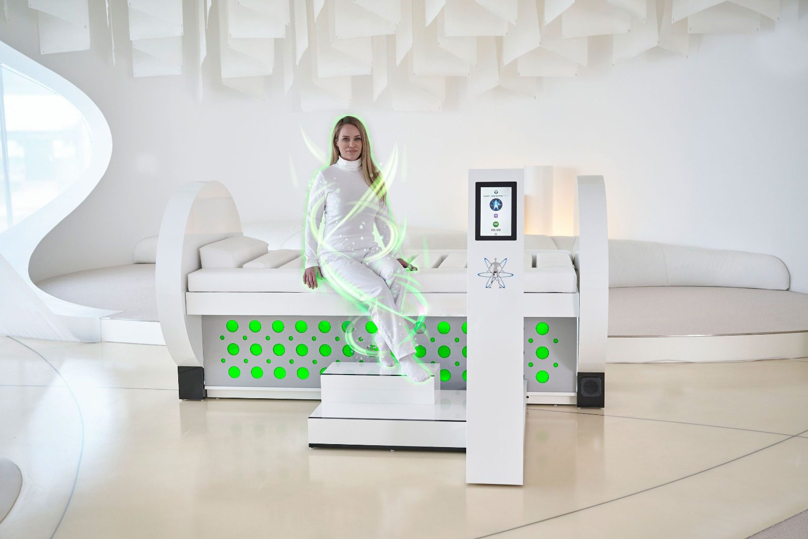
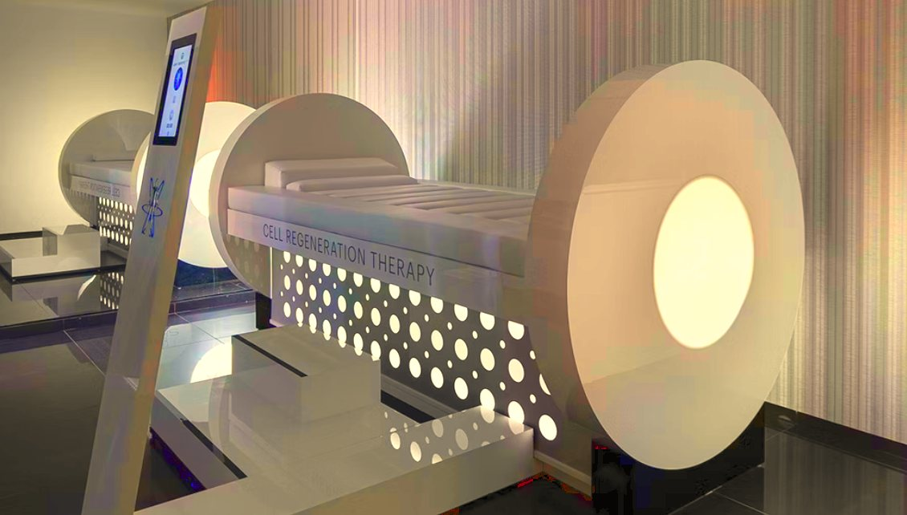
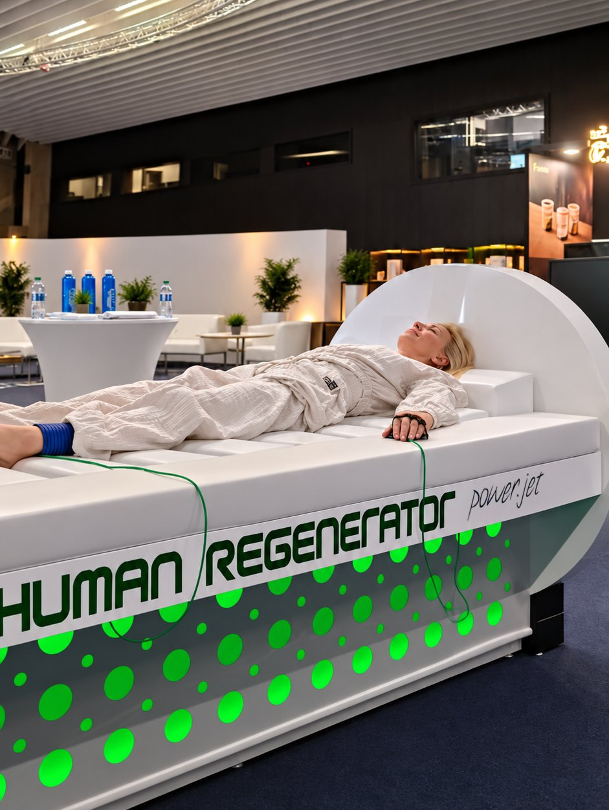
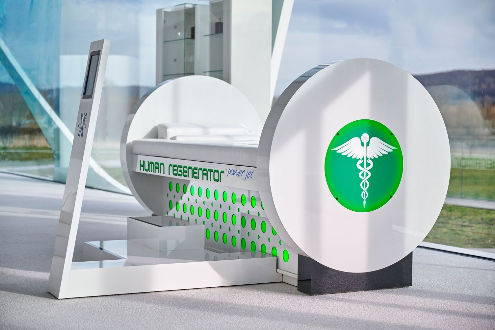
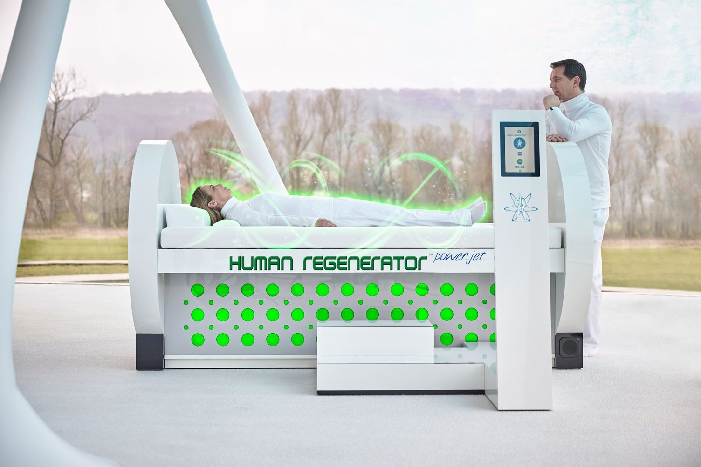
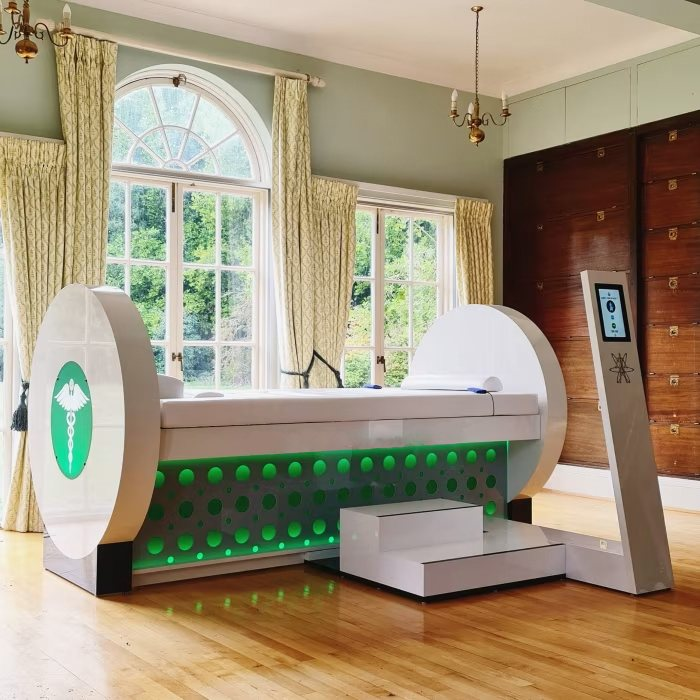
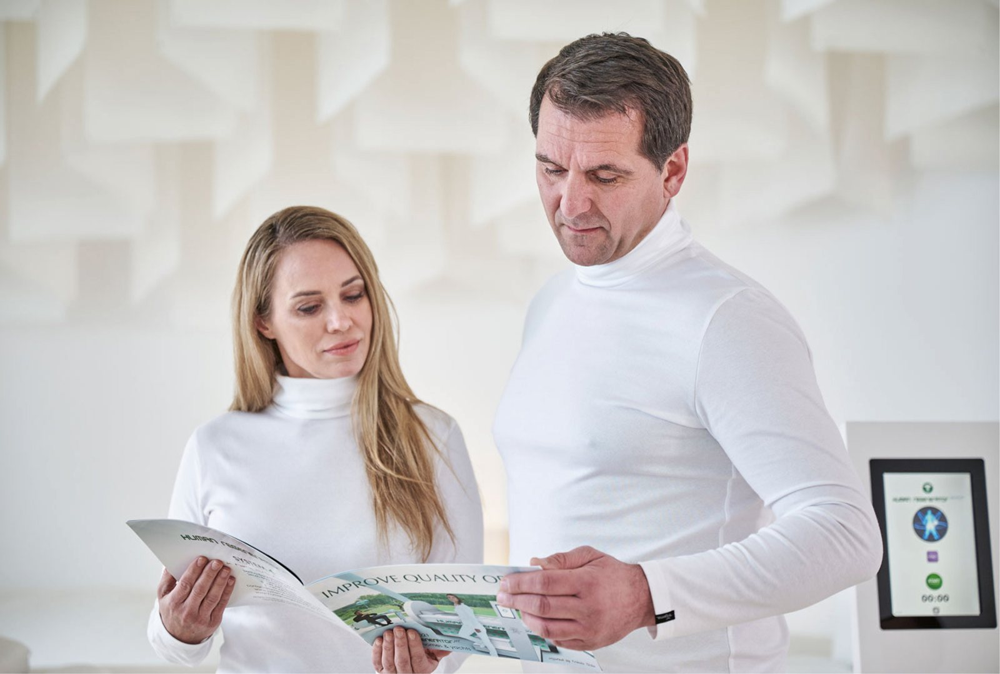
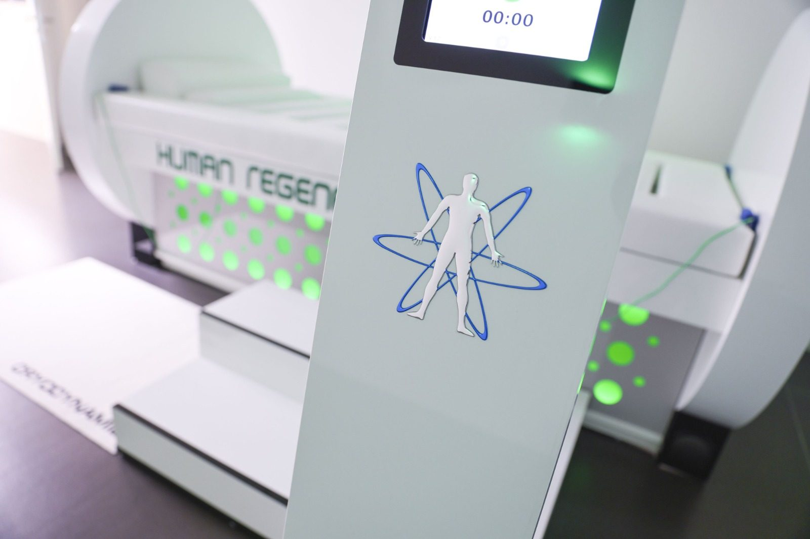
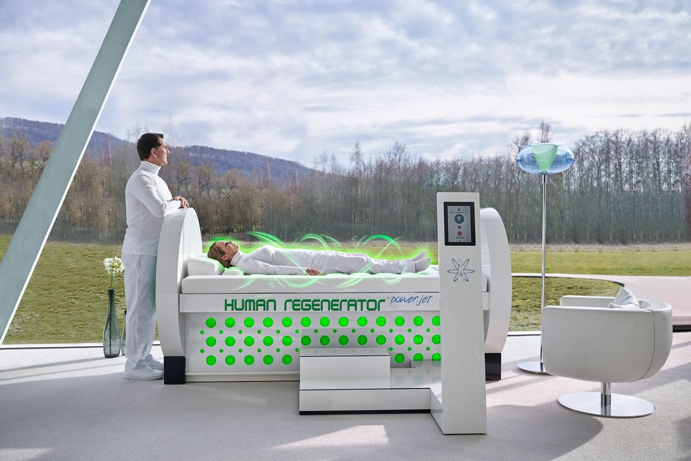

Human Regenerator
Close your eyes, and let the energy of cold plasma recharge you like a battery.
- Full-body charger with cold atmospheric plasma
- 30 minutes of electro-meditation
- One-touch start
- A sculptural centrepiece for any space
- A world exclusive, made in Germany

The power of
the northern lights
People cross half the world to stand beneath the northern lights, under a sky charged with light.
Inside the Human Regenerator, that charge surrounds you. You lie down, and an invisible field of cold plasma wraps the whole body: a soft hiss, a light tingling across the skin. Thoughts slow down, the breath settles, and many guests drift off to sleep or into a deep, almost meditative calm that feels like a holiday for the nervous system.
30 minutes later you step out light and clear-headed, as if every cell had been plugged in overnight.
Charged
like a battery
Plasma is the fourth state of matter, the same phenomenon that paints the northern lights across the sky. In its cold form it stays at a comfortable body temperature, which is why dermatology has trusted it for decades. The Human Regenerator's proprietary CAP+ technology turns it into a field rich in electrons and negative ions that surrounds you, even through clothing.
Every living cell carries its own tiny electrical charge: it is how cells talk to each other, take in nourishment and keep life running. The field is designed to support that natural balance, ease oxidative stress and lift the cells' own energy, the ATP that keeps us going. Instead of asking the body to work harder, it creates the conditions for the body to recharge on its own.
Quiet calm,
serious credentials
Even the stress hormone agrees.
Developed and built in Bad Zwischenahn, Germany, by System4 Technologies, cold-plasma specialists since 2008.
The field was independently measured by TÜV NORD: within EU limits for the general public and for staff.
Conforms to EU low-voltage, electromagnetic-compatibility and machine-safety standards.
Across Europe and America, from Six Senses to SHA Wellness and Euphoria, with millions of sessions since 2018.
First results of a placebo-controlled study at the University of Athens Medical School: better sleep, more energy and lower morning cortisol. NCT07279272 ↗︎
Trust
MCRC
Speak to a specialist ↗︎MCRC AG, Zürich: Swiss standards in selection, service and responsibility.
Every technology meets European and international safety standards and holds EU product safety certification.
Every technology we offer runs daily, in our own venues and with operators worldwide.
One touch,
30 minutes
Tap start for the standard 30-minute session. For a private session, a short start delay gives you time to lie down.
Connect the applicators, then settle in. Cashmere or silk clothes feel best during the session.
Half an hour of deep, undisturbed rest.
The timer ends the session, and the day goes on.
Natural fibres breathe, keep the body comfortably warm and let the session feel even more personal. Once a week keeps the energy topped up; in intensive phases, guests come several times a week.
Your plasma
jet
A sculptural full-body charger at the heart of your home, for you, your family and friends.
A part of family life, and a longevity habit. Everyone* can have their own 30 minutes on it: after training, after work, after a long day.
The world exclusive for your spa, hotel or longevity destination, directly from the manufacturer.
Your guests discover it as a treatment, find it waiting in their suite or unlock it with their membership.
* Not suitable for people with a pacemaker or other electronic implants, such as hearing aids or insulin pumps, people with epilepsy, children under 14, or during pregnancy.
Where it
belongs
The Regenerative Suite: an in-room experience very few properties in the world can offer.
A signature treatment, and a reason to travel.
Calm regeneration before and after treatments.
Fresh energy for athletes and demanding schedules.
Better
together










In
detail
- Technology
- Cold atmospheric plasma (CAP+)
- Position
- Lying, in comfortable natural fabrics
- Operation
- Touchscreen, one-touch start, automatic timer, adjustable session time
- Unit size
- 250 × 235 × 130 cm (POWER.JET)
- Weight
- 280 kg
- Room
- Min. 4 × 4 m for installation and free space around the unit, with air conditioning or windows
- Power supply
- 220–240 V, 50 / 60 Hz
- Consumption
- Max. 195 W in operation
- Installation
- No plumbing, drainage or exhaust
- Humidity
- Max. 50%
- Air quality
- Ozone below 0.05 ppm, under occupational exposure limits
- Certification
- CE · EMF measured by TÜV NORD
- Warranty
- 3 years, from the manufacturer
- Onboarding
- Delivery, installation and staff training included
The wow
in the room
Guests stop the moment they see it: luminous, sculptural, a little like something that arrived from the future. It quickly becomes the most talked-about piece in the house, and the one everybody wants to try.
Next time, they bring their friends and parents: the oldest marketing in the world, and still the best.
- Stand-alone treatment, in-suite amenity or membership highlight
- One-touch sessions that guests start themselves
- Plugs into a standard socket, installed in a single day
Good to know
What is cold plasma therapy?
Cold atmospheric plasma is the fourth state of matter, held at a comfortable body temperature. In the Human Regenerator JET, mini plasma jets surround your whole body with a CAP+ field for 30 minutes of rest, and applicators at the hands and feet focus it further: 2 or 4, depending on the session.
What does a session feel like?
A soft hiss, a light tingling across the skin, and then a deep, meditative calm. Many guests fall asleep. Some notice little the first time, and feel the energy more clearly with each session that follows.
How often should you use it?
Once a week for longevity, once or twice a week for everyday vitality. The steadier the rhythm, the stronger the result.
What should I wear?
Natural fibres such as cashmere or silk, with no more than 30% synthetics and no metal. Jewellery, watches, glasses and phones come off before the session.
What should I do after a session?
Drink half a litre of water: the body has worked more than it felt like.
Who should not use it?
People with a pacemaker or other electronic implants, such as implanted hearing aids or insulin pumps, people with epilepsy, children under 14, and during pregnancy. The electrostatic field may affect electronic devices.
Is it quiet and safe in the room?
Under 40 dB, quieter than a minibar. Ozone stays below 0.05 ppm, under occupational exposure limits, and the field is independently measured by TÜV NORD and CE certified.
Can I offer it in my spa or hotel?
Yes. It needs a room of at least 4 × 4 m and a standard socket, uses at most 195 W, needs no plumbing and no medically trained staff. Delivery, installation in a single day and staff training are included.
Full operating, safety and maintenance instructions are in the user manual.
The Human Regenerator is a non-invasive wellness system and is not a medical device.
Always
support you
Before and after the sale, our team answers whatever you and your guests need to know.
Your team learns to use it, explain it and recommend it.
Models, pricing and integration, personally.
A suite
with a story.
Models, pricing, and integration into your space: we'll take you through it personally.